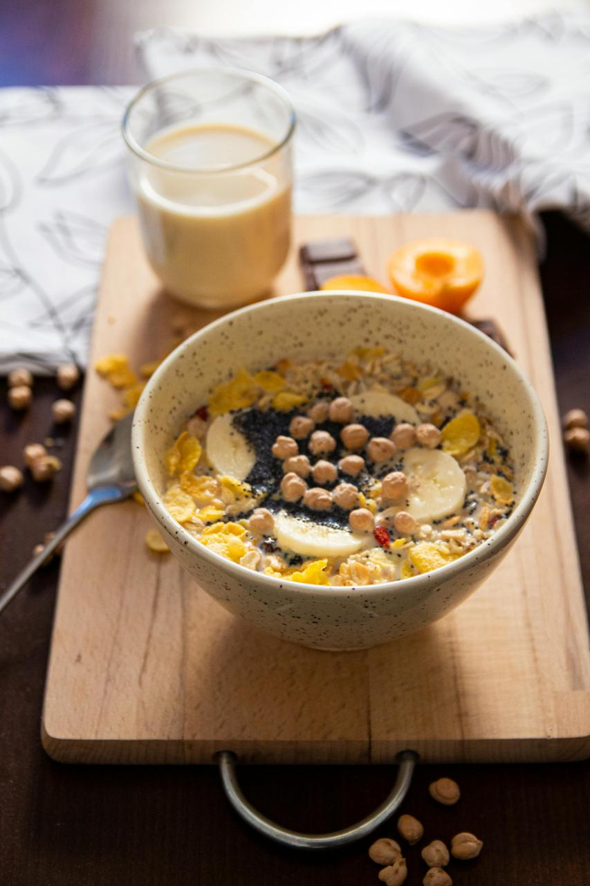
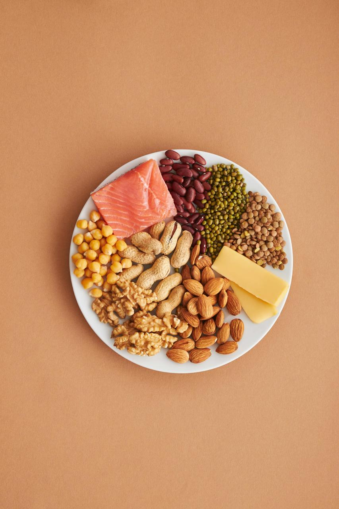
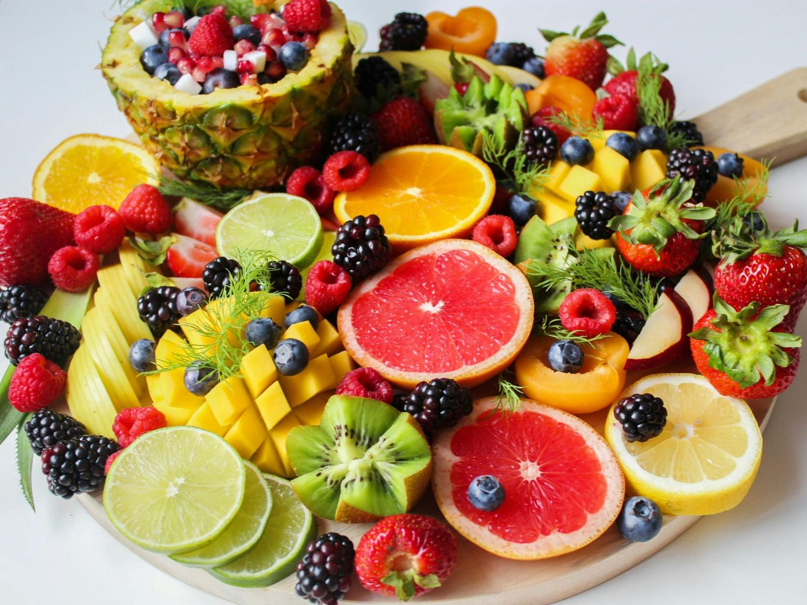

Nutrition Guide
Discover the essentials of meal planning, healthy eating habits, and delicious recipes to support your fitness goals.
Meal Planning
Plan your meals effectively to ensure a balanced intake of nutrients throughout the day.
- Incorporate lean proteins like chicken, fish, and legumes.
- Choose complex carbs such as brown rice and quinoa.
- Add a variety of colorful vegetables.
- Include healthy fats like avocado, nuts, and olive oil.

Healthy Eating Habits
Develop sustainable habits that will help you stay fit and healthy over time.
- Drink at least 8 glasses of water daily.
- Avoid sugary drinks and heavily processed foods.
- Practice mindful eating and portion control.
- Eat more fiber to support digestion.

Healthy Recipes
Explore easy-to-make recipes that align with your fitness goals.
- Avocado Toast: Whole grain toast with mashed avocado and eggs.
- Grilled Chicken Salad: Leafy greens topped with grilled chicken and nuts.
- Smoothie Bowl: A blend of fruits, yogurt, and granola.
